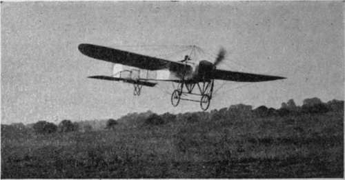
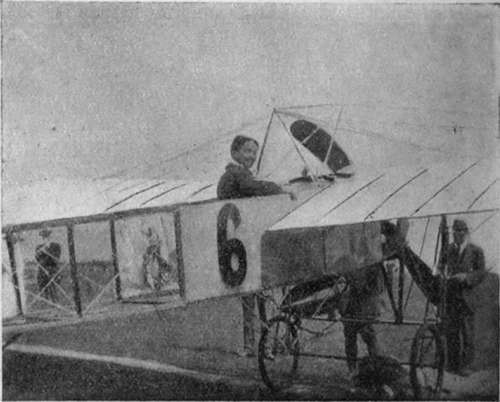

Chapter III. Flying Machines Of To-Day
Description
This section is from the book "All About Flying", by Gertrude Bacon. Also available from Amazon: All About Flying.
Chapter III. Flying Machines Of To-Day
AND now as to the machines themselves. It is obviously impossible, in a work of this size and modest pretension, to do more than glance at a few of them, and try to point out, in non-technical language, their chief characteristics. Nowadays when aviation and its terms are the everyday discussion of the multitude, and babbled of by the infant in the nursery, there is not the confusion that there used to be, and no one needs reminding, for example, that aeroplanes are divided into two great families— biplanes which lift with two main planes or supporting surfaces placed one above the other ; monoplanes which have but one (taking generally the form of two outstretched wings).
Nevertheless it is only yesterday that people were asking each other the difference between an aeroplane and a biplane, and only the day before yesterday that they were making an equal muddle over an aeroplane and an airship. When, but half a dozen years ago and less, a newspaper reporter shouted in head-lines of 1 Record Flight of an Airship,' it was quite a toss up whether he meant a dirigible balloon or a heavier-than-air flying machine, and more than doubtful whether he knew himself.
But though the two great divisions of aeroplanes —biplanes and monoplanes—yet remain, they now must be yet further divided, and for our present purpose flying machines fall naturally enough into four classes—monoplanes, propeller biplanes, tractor biplanes, and hydro-aeroplanes.
Of course there are yet other machines which do not fit into any of these categories. There are tri-planes, for example, and multiplanes, where the supporting surfaces are mounted in three or more tiers; there are hovering 'helicopters,' to be driven vertically upwards by propellers placed horizontally; ' ornithopters,' to flap their wings as birds; 'gy-ropters,' to revolve them ; but since these are all in the experimental stage at present, and our space is severely limited, they need not here be considered.
As type of the monoplane we may select the ever famous Bteriot, the first successful monoplane that ever flew, winner of innumerable triumphs, favoured mount of the world's greatest flyers. It is wonderful how little the modern B1eriot has departed in design and construction from 'Bleriot XI,' that flew to us across the Channel that never-to-be-forgotten July day of 1909 ; but it has to be remembered that the cross-Channel machine represented the result of nine whole years' labour on the part of its indefatigable inventor, who had finished his long and patient apprenticeship before ever his successors had begun upon their task.
To describe a Bleriot monoplane—or any other aeroplane—we have to embark on that wonderful jargon of French and English terms that aviation has brought into use. The debt that the Entente Cordiale owed to the coming of flight can never be overestimated. It was on the flying-grounds of France and England that the two nations first learned thoroughly to understand and appreciate each other, and one very definite result of their rapprochement there has been the addition of a score of new words to our English vocabulary which the best efforts of the man in the street, who has the greatest aversion to a foreign tongue, however little he minds mutilating his own, will never rid us of.
(Flight)
Bleriot Monoplane.
We say, therefore, that a Bleriot machine is mounted on a ' chassis,' because the English ' under-carriage' is clumsy and less distinctive. The chassis carries the rubber-tyred wheels on which the machine runs and alights, and is constructed simply, but very strongly, of steel tubing. Upon it falls the brunt of bad landings, the shocks of running over rough ground ; and even as a chain is no stronger than its weakest link, so upon the strength of the chassis the safety of pilot and machine entirely depends. The Bleriot chassis is one of the safest and most ingenious landing gears ever devised. In it are included two stout rubber springs known as the 'shock absorbers,' For the body of the machine we frequently use the word i fuselage,' In the typical Bleriot this is a wooden framework, covered in for the front portion, but simply bare spars behind, converging to the tail by which homely word we now generally translate the French ' empennage,' This tail contains the elevator, attached as a hinged flap to the rear of a fixed horizontal plane, and a small upright movable plane which is the rudder. The two well-cambered wings with rounded tips which spread out on either side from the front of the body are hung from a framework of steel tubes on the top of the fuselage known as the 'cabane,' Beneath them, sunk in the fuselage, the pilot finds his seat, a cross-bar which operates the rudder at his feet, and in front of him a lever known as the 'cloche,'because the lower part of it is (or was, for latest machines are being made differently) shaped like the dome of a big electric bell. To this lever are attached the wires which move the elevator and warp the wings. In front of the pilot is the engine, and in front of all the big propeller, which, because it is placed in the front and draws the machine forward instead of driving it from behind, is not rightly a 'propeller' at all, but a ' tractor ' screw.
The cross-Channel Bleriot (type Calais-Douvres) was a tiny little craft only 29 feet in span and 23 from nose to tail. Its famous rival, the Antoinette, now, alas ! extinct, was a much larger bird, very beautiful and graceful, with square-tipped wings, cross tail and polished wood boat-shaped body tapering to a prow. The machine which most nearly resembles it nowadays is the fast English' Martinsyde' monoplane, made by a firm long renowned for their skilled design and magnificent workmanship.
{G. Bacon)
Bleriot Monoplane. Pilot's Seat.
Continue to: